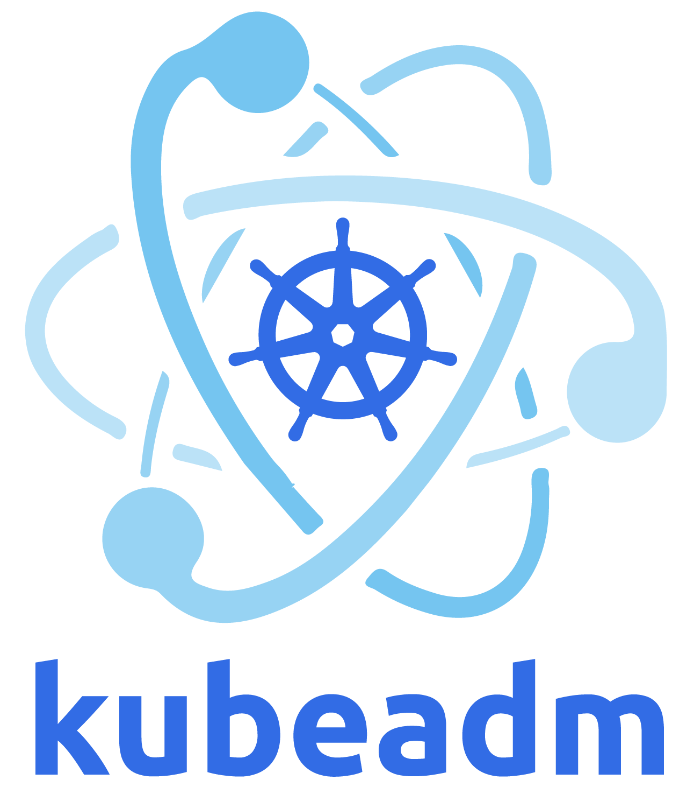

Usingkubeadm, you can create a minimum viable Kubernetes
cluster that conforms to best practices. In fact, you can use
kubeadm to set up a cluster that will pass the Kubernetes
Conformance tests. kubeadm also supports other cluster
lifecycle functions, such as bootstrap
tokens and cluster upgrades.
The kubeadm tool is good if you need:
- A simple way for you to try out Kubernetes, possibly for the first time.
- A way for existing users to automate setting up a cluster and test their application.
- A building block in other ecosystem and/or installer tools with a larger scope.
You can install and use kubeadm on various machines:
your laptop, a set of cloud servers, a Raspberry Pi, and more. Whether
you're deploying into the cloud or on-premises, you can integrate
kubeadm into provisioning systems such as Ansible or
Terraform.
Before you begin
To follow this guide, you need:
- One or more machines running a deb/rpm-compatible Linux OS; for example: Ubuntu or CentOS.
- 2 GiB or more of RAM per machine--any less leaves little room for your apps.
- At least 2 CPUs on the machine that you use as a control-plane node.
- Full network connectivity among all machines in the cluster. You can use either a public or a private network.
You also need to use a version of kubeadm that can
deploy the version of Kubernetes that you want to use in your new
cluster.
Kubernetes'
version and version skew support policy applies to
kubeadm as well as to Kubernetes overall. Check that policy
to learn about what versions of Kubernetes and kubeadm are
supported. This page is written for Kubernetes v1.37.
The kubeadm tool's overall feature state is General
Availability (GA). Some sub-features are still under active development.
The implementation of creating the cluster may change slightly as the
tool evolves, but the overall implementation should be pretty
stable.
Note:
Any commands under kubeadm alpha are, by definition,
supported on an alpha level.
Objectives
- Install a single control-plane Kubernetes cluster
- Install a Pod network on the cluster so that your Pods can talk to each other
Instructions
Preparing the hosts
Component installation
Install a container runtime and kubeadm on all the hosts. For detailed instructions and other prerequisites, see Installing kubeadm.
Note:
If you have already installed kubeadm, see the first two steps of the Upgrading Linux nodes document for instructions on how to upgrade kubeadm.
When you upgrade, the kubelet restarts every few seconds as it waits in a crashloop for kubeadm to tell it what to do. This crashloop is expected and normal. After you initialize your control-plane, the kubelet runs normally.
Network setup
kubeadm similarly to other Kubernetes components tries to find a usable IP on the network interfaces associated with a default gateway on a host. Such an IP is then used for the advertising and/or listening performed by a component.
To find out what this IP is on a Linux host you can use:
ip route show # Look for a line starting with "default via"Note:
If two or more default gateways are present on the host, a Kubernetes component will try to use the first one it encounters that has a suitable global unicast IP address. While making this choice, the exact ordering of gateways might vary between different operating systems and kernel versions.
Kubernetes components do not accept custom network interface as an option, therefore a custom IP address must be passed as a flag to all components instances that need such a custom configuration.
Note:
If the host does not have a default gateway and if a custom IP address is not passed to a Kubernetes component, the component may exit with an error.
To configure the API server advertise address for control plane nodes
created with both init and join, the flag
--apiserver-advertise-address can be used. Preferably, this
option can be set in the kubeadm
API as InitConfiguration.localAPIEndpoint and
JoinConfiguration.controlPlane.localAPIEndpoint.
For kubelets on all nodes, the --node-ip option can be
passed in .nodeRegistration.kubeletExtraArgs inside a
kubeadm configuration file (InitConfiguration or
JoinConfiguration).
For dual-stack see Dual-stack support with kubeadm.
The IP addresses that you assign to control plane components become part of their X.509 certificates' subject alternative name fields. Changing these IP addresses would require signing new certificates and restarting the affected components, so that the change in certificate files is reflected. See Manual certificate renewal for more details on this topic.
Warning:
The Kubernetes project recommends against this approach (configuring
all component instances with custom IP addresses). Instead, the
Kubernetes maintainers recommend to setup the host network, so that the
default gateway IP is the one that Kubernetes components auto-detect and
use. On Linux nodes, you can use commands such as ip route
to configure networking; your operating system might also provide higher
level network management tools. If your node's default gateway is a
public IP address, you should configure packet filtering or other
security measures that protect the nodes and your cluster.
Preparing the required container images
This step is optional and only applies in case you wish
kubeadm init and kubeadm join to not download
the default container images which are hosted at
registry.k8s.io.
Kubeadm has commands that can help you pre-pull the required images when creating a cluster without an internet connection on its nodes. See Running kubeadm without an internet connection for more details.
Kubeadm allows you to use a custom image repository for the required images. See Using custom images for more details.
Initializing your control-plane node
The control-plane node is the machine where the control plane components run, including etcd (the cluster database) and the API Server (which the kubectl command line tool communicates with).
- (Recommended) If you have plans to upgrade this single control-plane
kubeadmcluster to high availability you should specify the--control-plane-endpointto set the shared endpoint for all control-plane nodes. Such an endpoint can be either a DNS name or an IP address of a load-balancer. - Choose a Pod network add-on, and verify whether it requires any
arguments to be passed to
kubeadm init. Depending on which third-party provider you choose, you might need to set the--pod-network-cidrto a provider-specific value. See Installing a Pod network add-on. - (Optional)
kubeadmtries to detect the container runtime by using a list of well known endpoints. To use different container runtime or if there are more than one installed on the provisioned node, specify the--cri-socketargument tokubeadm. See Installing a runtime.
To initialize the control-plane node run:
kubeadm init <args>Considerations about apiserver-advertise-address and ControlPlaneEndpoint
While --apiserver-advertise-address can be used to set
the advertised address for this particular control-plane node's API
server, --control-plane-endpoint can be used to set the
shared endpoint for all control-plane nodes.
--control-plane-endpoint allows both IP addresses and
DNS names that can map to IP addresses. Please contact your network
administrator to evaluate possible solutions with respect to such
mapping.
Here is an example mapping:
192.168.0.102 cluster-endpointWhere 192.168.0.102 is the IP address of this node and
cluster-endpoint is a custom DNS name that maps to this IP.
This will allow you to pass
--control-plane-endpoint=cluster-endpoint to
kubeadm init and pass the same DNS name to
kubeadm join. Later you can modify
cluster-endpoint to point to the address of your
load-balancer in a high availability scenario.
Turning a single control plane cluster created without
--control-plane-endpoint into a highly available cluster is
not supported by kubeadm.
More information
For more information about kubeadm init arguments, see
the kubeadm reference
guide.
To configure kubeadm init with a configuration file see
Using
kubeadm init with a configuration file.
To customize control plane components, including optional IPv6 assignment to liveness probe for control plane components and etcd server, provide extra arguments to each component as documented in custom arguments.
To reconfigure a cluster that has already been created see Reconfiguring a kubeadm cluster.
To run kubeadm init again, you must first tear down the cluster.
If you join a node with a different architecture to your cluster, make sure that your deployed DaemonSets have container image support for this architecture.
kubeadm init first runs a series of prechecks to ensure
that the machine is ready to run Kubernetes. These prechecks expose
warnings and exit on errors. kubeadm init then downloads
and installs the cluster control plane components. This may take several
minutes. After it finishes you should see:
Your Kubernetes control-plane has initialized successfully!
To start using your cluster, you need to run the following as a regular user:
mkdir -p $HOME/.kube
sudo cp -i /etc/kubernetes/admin.conf $HOME/.kube/config
sudo chown $(id -u):$(id -g) $HOME/.kube/config
You should now deploy a Pod network to the cluster.
Run "kubectl apply -f [podnetwork].yaml" with one of the options listed at:
/docs/concepts/cluster-administration/addons/
You can now join any number of machines by running the following on each node
as root:
kubeadm join <control-plane-host>:<control-plane-port> --token <token> --discovery-token-ca-cert-hash sha256:<hash>To make kubectl work for your non-root user, run these commands,
which are also part of the kubeadm init output:
mkdir -p $HOME/.kube
sudo cp -i /etc/kubernetes/admin.conf $HOME/.kube/config
sudo chown $(id -u):$(id -g) $HOME/.kube/configAlternatively, if you are the root user, you can
run:
export KUBECONFIG=/etc/kubernetes/admin.confWarning:
The kubeconfig file admin.conf that
kubeadm init generates contains a certificate with
Subject: O = kubeadm:cluster-admins, CN = kubernetes-admin.
The group kubeadm:cluster-admins is bound to the built-in
cluster-admin ClusterRole. Do not share the
admin.conf file with anyone.
kubeadm init generates another kubeconfig file
super-admin.conf that contains a certificate with
Subject: O = system:masters, CN = kubernetes-super-admin.
system:masters is a break-glass, super user group that
bypasses the authorization layer (for example RBAC). Do not share the
super-admin.conf file with anyone. It is recommended to
move the file to a safe location.
See Generating
kubeconfig files for additional users on how to use
kubeadm kubeconfig user to generate kubeconfig files for
additional users.
Make a record of the kubeadm join command that
kubeadm init outputs. You need this command to join nodes to your cluster.
The token is used for mutual authentication between the control-plane
node and the joining nodes. The token included here is secret. Keep it
safe, because anyone with this token can add authenticated nodes to your
cluster. These tokens can be listed, created, and deleted with the
kubeadm token command. See the kubeadm
reference guide.
Installing a Pod network add-on
Caution:
This section contains important information about networking setup and deployment order. Read all of this advice carefully before proceeding.
You must deploy a Container Network Interface (CNI) based Pod network add-on so that your Pods can communicate with each other. Cluster DNS (CoreDNS) will not start up before a network is installed.
Take care that your Pod network must not overlap with any of the host networks: you are likely to see problems if there is any overlap. (If you find a collision between your network plugin's preferred Pod network and some of your host networks, you should think of a suitable CIDR block to use instead, then use that during
kubeadm initwith--pod-network-cidrand as a replacement in your network plugin's YAML).By default,
kubeadmsets up your cluster to use and enforce use of RBAC (role based access control). Make sure that your Pod network plugin supports RBAC, and so do any manifests that you use to deploy it.If you want to use IPv6--either dual-stack, or single-stack IPv6 only networking--for your cluster, make sure that your Pod network plugin supports IPv6. IPv6 support was added to CNI in v0.6.0.
Note:
Kubeadm should be CNI agnostic and the validation of CNI providers is out of the scope of our current e2e testing. If you find an issue related to a CNI plugin you should log a ticket in its respective issue tracker instead of the kubeadm or kubernetes issue trackers.
Several external projects provide Kubernetes Pod networks using CNI, some of which also support Network Policy.
See a list of add-ons that implement the Kubernetes networking model.
Please refer to the Installing Addons page for a non-exhaustive list of networking addons supported by Kubernetes. You can install a Pod network add-on with the following command on the control-plane node or a node that has the kubeconfig credentials:
kubectl apply -f <add-on.yaml>Note:
Only a few CNI plugins support Windows. More details and setup instructions can be found in Adding Windows worker nodes.
You can install only one Pod network per cluster.
Once a Pod network has been installed, you can confirm that it is
working by checking that the CoreDNS Pod is Running in the
output of kubectl get pods --all-namespaces. And once the
CoreDNS Pod is up and running, you can continue by joining your
nodes.
If your network is not working or CoreDNS is not in the
Running state, check out the troubleshooting
guide for kubeadm.
Managed node labels
By default, kubeadm enables the NodeRestriction
admission controller that restricts what labels can be self-applied by
kubelets on node registration. The admission controller documentation
covers what labels are permitted to be used with the kubelet
--node-labels option.
Caution:
Because of the NodeRestriction admission controller, you
cannot use the kubelet --node-labels flag
to apply restricted labels (such as
node-role.kubernetes.io/*) during initialization.
If you attempt to add restricted labels by using this kubelet flag, the node will fail to register with the API server.
To apply these labels manually, you must use
kubectl label after the node has joined the cluster. Ensure
you are using a privileged kubeconfig, such as the kubeadm-managed
/etc/kubernetes/admin.conf.
Control plane node isolation
By default, your cluster will not schedule Pods on the control plane nodes for security reasons. If you want to be able to schedule Pods on the control plane nodes, for example for a single machine Kubernetes cluster, run:
kubectl taint nodes --all node-role.kubernetes.io/control-plane-The output will look something like:
node "test-01" untainted
...This will remove the
node-role.kubernetes.io/control-plane:NoSchedule taint from
any nodes that have it, including the control plane nodes, meaning that
the scheduler will then be able to schedule Pods everywhere.
Additionally, you can execute the following command to remove the node.kubernetes.io/exclude-from-external-load-balancers
label from the control plane node, which excludes it from the list of
backend servers:
kubectl label nodes --all node.kubernetes.io/exclude-from-external-load-balancers-Adding more control plane nodes
See Creating Highly Available Clusters with kubeadm for steps on creating a high availability kubeadm cluster by adding more control plane nodes.
Adding worker nodes
The worker nodes are where your workloads run.
The following pages show how to add Linux and Windows worker nodes to
the cluster by using the kubeadm join command:
(Optional) Controlling your cluster from machines other than the control-plane node
In order to get a kubectl on some other computer (e.g. laptop) to talk to your cluster, you need to copy the administrator kubeconfig file from your control-plane node to your workstation like this:
scp root@<control-plane-host>:/etc/kubernetes/admin.conf .
kubectl --kubeconfig ./admin.conf get nodesNote:
The example above assumes SSH access is enabled for root. If that is
not the case, you can copy the admin.conf file to be
accessible by some other user and scp using that other user
instead.
The admin.conf file gives the user superuser
privileges over the cluster. This file should be used sparingly. For
normal users, it's recommended to generate a unique credential to which
you grant privileges. You can do this with the
kubeadm kubeconfig user --client-name <CN>
command. That command will print out a KubeConfig file to STDOUT which
you should save to a file and distribute to your user. After that, grant
privileges by using
kubectl create (cluster)rolebinding.
(Optional) Proxying API Server to localhost
If you want to connect to the API Server from outside the cluster,
you can use kubectl proxy:
scp root@<control-plane-host>:/etc/kubernetes/admin.conf .
kubectl --kubeconfig ./admin.conf proxyYou can now access the API Server locally at
http://localhost:8001/api/v1
Clean up
If you used disposable servers for your cluster, for testing, you can
switch those off and do no further clean up. You can use
kubectl config delete-cluster to delete your local
references to the cluster.
However, if you want to deprovision your cluster more cleanly, you should first drain the node and make sure that the node is empty, then deconfigure the node.
Remove the node
Talking to the control-plane node with the appropriate credentials, run:
kubectl drain <node name> --delete-emptydir-data --force --ignore-daemonsetsBefore removing the node, reset the state installed by
kubeadm:
kubeadm resetThe reset process does not reset or clean up iptables rules or IPVS tables. If you wish to reset iptables, you must do so manually:
iptables -F && iptables -t nat -F && iptables -t mangle -F && iptables -XIf you want to reset the IPVS tables, you must run the following command:
ipvsadm -CNow remove the node:
kubectl delete node <node name>If you wish to start over, run kubeadm init or
kubeadm join with the appropriate arguments.
Clean up the control plane
You can use kubeadm reset on the control plane host to
trigger a best-effort clean up.
See the kubeadm reset
reference documentation for more information about this subcommand and
its options.
Version skew policy
While kubeadm allows version skew against some components that it manages, it is recommended that you match the kubeadm version with the versions of the control plane components, kube-proxy and kubelet.
kubeadm's skew against the Kubernetes version
kubeadm can be used with Kubernetes components that are the same
version as kubeadm or one version older. The Kubernetes version can be
specified to kubeadm by using the --kubernetes-version flag
of kubeadm init or the ClusterConfiguration.kubernetesVersion
field when using --config. This option will control the
versions of kube-apiserver, kube-controller-manager, kube-scheduler and
kube-proxy.
Example:
- kubeadm is at 1.37
kubernetesVersionmust be at 1.37 or 1.36
kubeadm's skew against the kubelet
Similarly to the Kubernetes version, kubeadm can be used with a kubelet version that is the same version as kubeadm or three versions older.
Example:
- kubeadm is at 1.37
- kubelet on the host must be at 1.37, 1.36, 1.35 or 1.34
kubeadm's skew against kubeadm
There are certain limitations on how kubeadm commands can operate on existing nodes or whole clusters managed by kubeadm.
If new nodes are joined to the cluster, the kubeadm binary used for
kubeadm join must match the last version of kubeadm used to
either create the cluster with kubeadm init or to upgrade
the same node with kubeadm upgrade. Similar rules apply to
the rest of the kubeadm commands with the exception of
kubeadm upgrade.
Example for kubeadm join:
- kubeadm version 1.37 was used to create a cluster with
kubeadm init - Joining nodes must use a kubeadm binary that is at version 1.37
Nodes that are being upgraded must use a version of kubeadm that is the same MINOR version or one MINOR version newer than the version of kubeadm used for managing the node.
Example for kubeadm upgrade:
- kubeadm version 1.36 was used to create or upgrade the node
- The version of kubeadm used for upgrading the node must be at 1.36 or 1.37
To learn more about the version skew between the different Kubernetes component see the Version Skew Policy.
Limitations
Cluster resilience
The cluster created here has a single control-plane node, with a single etcd database running on it. This means that if the control-plane node fails, your cluster may lose data and may need to be recreated from scratch.
Workarounds:
Regularly back up etcd. The etcd data directory configured by kubeadm is at
/var/lib/etcdon the control-plane node.Use multiple control-plane nodes. You can read Options for Highly Available topology to pick a cluster topology that provides high-availability.
Platform compatibility
kubeadm deb/rpm packages and binaries are built for amd64, arm (32-bit), arm64, ppc64le, and s390x following the multi-platform proposal.
Multiplatform container images for the control plane and addons are also supported since v1.12.
Only some of the network providers offer solutions for all platforms. Please consult the list of network providers above or the documentation from each provider to figure out whether the provider supports your chosen platform.
Troubleshooting
If you are running into difficulties with kubeadm, please consult our troubleshooting docs.
What's next
- Verify that your cluster is running properly with Sonobuoy
- See Upgrading
kubeadm clusters for details about upgrading your cluster using
kubeadm. - Learn about advanced
kubeadmusage in the kubeadm reference documentation - Learn more about Kubernetes concepts
and
kubectl. - See the Cluster Networking page for a bigger list of Pod network add-ons.
- See the list of add-ons to explore other add-ons, including tools for logging, monitoring, network policy, visualization & control of your Kubernetes cluster.
- Configure how your cluster handles logs for cluster events and from applications running in Pods. See Logging Architecture for an overview of what is involved.
Feedback
- For bugs, visit the kubeadm GitHub issue tracker
- For support, visit the #kubeadm Slack channel
- General SIG Cluster Lifecycle development Slack channel: #sig-cluster-lifecycle
- SIG Cluster Lifecycle SIG information
- SIG Cluster Lifecycle mailing list: kubernetes-sig-cluster-lifecycle